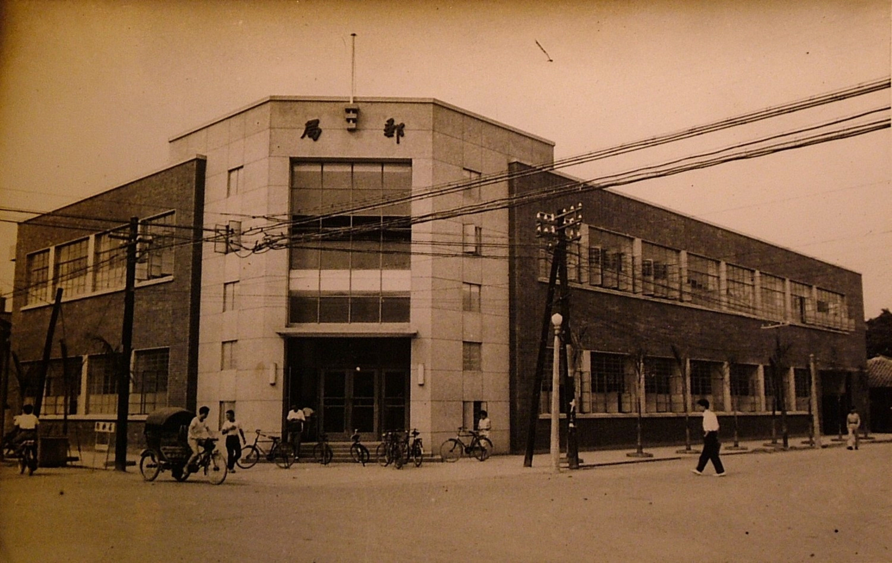
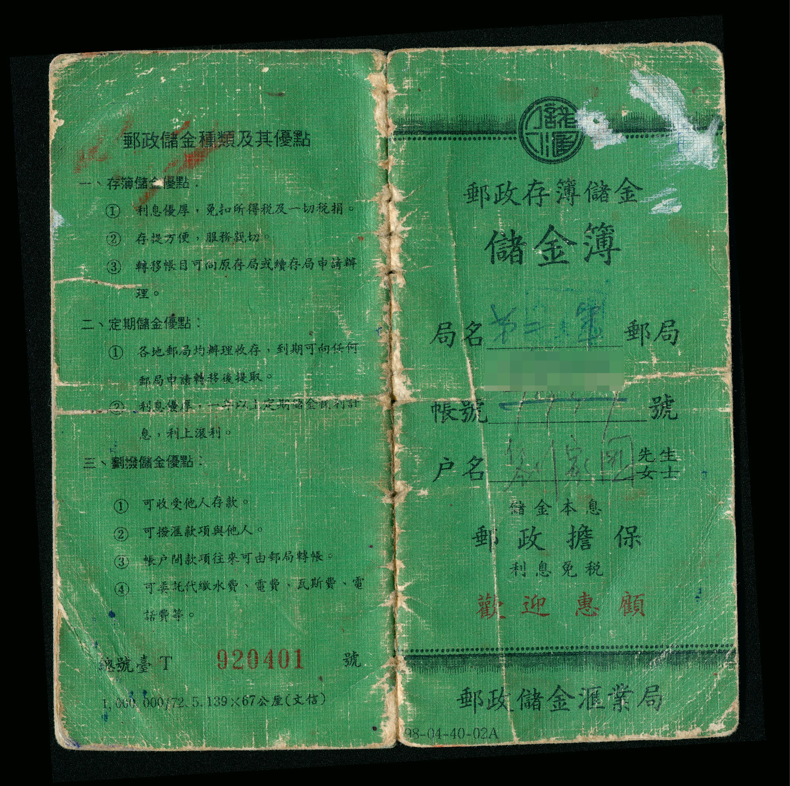

中華郵政發展史與組織轉型
前言
中華郵政的世紀歷史傳承中華郵政的發展迄今已走過雙甲子（120年），業務範疇跨越清末、日治、中華民國大陸時期與現代臺灣，歷經數次重大的政治變革與組織轉型。
在長年的演進中，郵政體制從最初純粹傳遞信件的政府機關，逐步演變成融合「郵務、儲金、壽險」三位一體的企業化經營模式。面對 21 世紀資訊科技的日新月異，以及民營遞送業與金融壽險業的激烈市場競爭，郵政於民國 92 年（西元 2003 年）正式完成公司化改制，轉型為交通部 100% 持股的國營事業機構。如今，這家擁有 2 萬 6 千多名員工的龐大企業，在全國各鄉鎮、城市及離島廣設服務據點，以「榮譽、責任、承諾」為信念，肩負著國家普及化服務的社會責任。
一、 清廷與臺灣地方官員時期
1. 現代郵政的萌芽與奠基：臺灣巡撫劉銘傳主導（清光緒14年 / 西元1888年）
- 歷史背景與政策發布： 清光緒 14 年正月 30 日（西元 1888 年 2 月 21 日），臺灣首任巡撫劉銘傳為了推動臺灣近代化建設，發布了共計 16 條的「臺灣郵政條款」。
- 變革與具體改變： 於同年 3 月 22 日（舊曆 2 月 10 日）在臺北府城正式創辦「臺灣郵政總局」。此一體制打破過往官方驛站的限制，開始發行郵票，並首度面向民間收寄普通大眾的信件。然而，這項具有劃時代意義的嶄新郵政制度，在當時僅限於臺灣本島推行，並未擴及清廷所管轄的大陸地區。
- 新竹郵便局：
- 臺東郵便局：
2. 大清海關總稅務司兼管（清光緒21~22年 / 西元1895~1896年）
- 歷史背景與新式章程： 清光緒 21 年（西元 1895 年），時任清廷海關總稅務司的英國人赫德（Robert Hart）向朝廷擬具了「開辦新式郵政的章程」共 4 項、計 44 條。
- 變革與具體改變： 總理衙門於清光緒 22 年 2 月 7 日（西元 1896 年 3 月 20 日）據以入奏並奉准開辦，正式成立「大清郵政官局」。該局由赫德兼領總郵政司，全面綜理郵政開辦的事務。此舉標誌著中國現代郵政體制的開端。為了紀念這個關鍵節點，交通部於民國 36 年（西元 1947 年）核定，將每年的 3 月 20 日定為「郵政紀念日」。
3. 清廷郵傳部接管（清宣統3年 / 西元1911年）
- 變革與具體改變： 現代郵政在設立之初，因仰賴外籍稅務司的體系，長期由海關稅務司兼管。直到清宣統 3 年（西元 1911 年），郵政業務才正式脫離海關，移交給清廷中央的「郵傳部」直接接管，並在旗下正式設立「郵政總局」，完成了郵政與海關的分離。
二、 日本統治時期
1. 臺灣本土郵務的戰時過渡與多元拓展：野戰郵便局時期（西元1895~1896年）
- 歷史背景： 甲午戰爭清廷戰敗，西元 1895 年馬關條約將臺灣割讓給日本。日本人在臺灣統治初期，為了應對軍事需要與治權交接，率先在臺灣設置了「野戰郵便局」。
- 變革與具體改變： 次年（西元 1896 年），隨著臺灣局勢相對穩定，日本當局廢止了帶有軍事性質的野戰郵便，接續辦理面向一般大眾的「普通郵政」。
- 新竹郵便局實例： 日治時期新竹郵政之始為明治 28 年（1895）7 月日軍基於軍事需求而成立的第三野戰郵便局，至明治 29 年 4 月恢復民政而廢止，改設新竹郵便電信局。明治 40 年，臺灣總督府制定「臺灣總督府郵便局官制」，將原來的郵便電信局改稱為郵便局。大正 2 年（1913）重新興建，大正 3 年完工為第二代新竹郵便局（今已不存，原址改建為新竹武昌街郵局）。
- 臺東郵便局實例： 於明治 29 年（1896 年）8 月開設，與臺灣銀行臺東支店相望。
2. 臺灣總督府交通局遞信部掌管
- 變革與具體改變： 日治時期，日本在臺灣施行「郵便條例」與「郵便法」，並逐步將郵政業務由早期的軍方軍事體系，移轉至「臺灣總督府交通局」旗下的「遞信部」辦理。遞信部的性質類似於現今的郵區管理局，其主掌的業務除了基本的郵務外，更進一步拓展到了金融與保險領域，包含：儲金、匯兌、簡易保險以及郵便年金等項目，奠定了臺灣本土儲匯與人壽保險的早期基礎。
三、 中華民國政府機關時期
1. 全面法制化、遷臺與區域擴張：中華郵政成立與儲匯業務獨立（民國元年~25年 / 西元1912~1936年）
- 變革與具體改變： 民國元年（西元 1912 年），新成立的中華民國政府將原有的郵傳部改組為「交通部」，原本的「大清郵政」也正式更名為「中華郵政」。隨著金融業務需求劇增，民國 19 年（西元 1930 年）成立了「郵政儲金匯業總局」。民國 24 年（西元 1935 年）政府公布實施《郵政法》，將郵政儲金匯業總局改組為隸屬於郵政總局的「郵政儲金匯業局」，並於同年正式開辦「簡易人壽保險業務」。民國 25 年，政府進一步施行《郵政法》並訂定《郵政規則》，確立了國家郵政事業長期發展的法制基礎。
2. 戰後接收、遷臺與業務復業（民國35~51年 / 西元1946~1962年）
- 變革與具體改變： 二戰結束後，民國 35 年（西元 1946 年）在臺灣成立「臺灣郵電管理局」接收日治時期財產。民國 38 年（西元 1949 年）4 月 1 日，郵電分家，奉準拆分設立「臺灣郵政管理局」與「電信管理局」。同年，因國共內戰局勢動盪，南京的「郵政總局」及「郵政儲金匯業局」隨中央政府一同自大陸遷移至臺灣。
- 業務調整： 民國 39 年（西元 1950 年），郵政總局奉交通部指示，一度停止了郵政儲金匯業局在大陸時期的各項業務活動，改由「臺灣郵政管理局」繼續在臺辦理本土的儲匯業務，並由郵政總局直接監督。直到民國 51 年（西元 1962 年），為了發揮國家「鼓勵儲蓄、活絡金融」兩大政策功能，「郵政儲金匯業局」才正式在臺復業。
- 前線軍郵（馬祖地區實例）： 民國 38 年國軍進駐馬祖並設立臨時郵局。民國 46 年 10 月 4 日於東引設置「軍郵五所」。馬祖地區因實施戰地政務，依《戰區設置軍郵辦法》設置軍郵局（如馬祖第二軍郵局於 1966 年成立），隸屬於郵政總局台北郵局第一軍郵管理處管轄，並受國防部督導，直到戰地政務解除後才回歸臺灣本地郵局業務。
彰化縣郵政總局：

郵局儲金簿：

3. 改制三區管理局（民國69年 / 西元1980年）
- 變革與具體改變： 民國 69 年（西元 1980 年）9 月 1 日，郵政總局為了因應臺灣經濟起飛後的業務急速擴展，並為了加強基層的經營管理需要，決定調整組織架構，將原本統一管轄全臺的「臺灣郵政管理局」進行裁撤改制，拆分為「臺灣北區郵政管理局」、「臺灣中區郵政管理局」與「臺灣南區郵政管理局」三區，實施分區管理制度。
四、 國營事業公司化時期
1. 企業化轉型與現代制度創新：突破法規限制與正式公司化（民國91~92年 / 西元2002~2003年）
- 變革成因： 進入 21 世紀後，面臨社會變遷與資訊科技的衝擊，民間快遞、物流業積極搶奪大都會區的傳統郵件市場；同時，各民營銀行與人壽保險業者也帶來極其激烈的市場競爭。原本「政府機關」的組織型態存在許多經營限制，無法靈活動對。
- 變革與具體改變： 為了突破經營限制、提升競爭力，民國 91 年（西元 2002 年）7 月完成《郵政法》的重大修正。民國 92 年（西元 2003 年）1 月 1 日，交通部郵政總局正式改制為由交通部 100% 持股的國營事業「中華郵政股份有限公司」。公司概括承受了改制前郵政總局的所有資產與負債，並延續經營原有業務，組織型態正式由行政機關蛻變為企業體。
2. 名稱更迭（民國96~97年 / 西元2007~2008年）
- 變革與具體改變： 民國 96 年（西元 2007 年）2 月 9 日，配合當時政府的本土化政策，公司一度更名為「臺灣郵政股份有限公司」。然而，由於當時攸關郵政根本的《郵政四法》修法程序並未在立法院完成，導致更名後的公司名稱與《郵政法》法條中的法定名稱不符。民國 97 年（西元 2008 年）8 月 1 日，公司再次依法回復法定名稱為「中華郵政股份有限公司」。在這一整年名稱更迭的波折期間，郵政的實質權利、義務、業務經營以及對民眾的服務皆維持正常，未受影響。
3. 現代企業治理制度的確立
公司化改制後，中華郵政引進了現代企業的管理思維，具體改變包含三大制度：
- a. 實施「董事長責任制」： 董事長須全權負起公司營運的最終經營責任；總經理則兼任董事，其人選由董事長提請董事會派任，建立了權責分明的公司治理架構。
- b. 人事制度暫採「雙軌制」：
- 改制前留任人員： 明定改制前原交通部郵政總局及其所屬機構的現職人員，仍適用原有的公務員人事法令、規章與福利規範，保障其既有權益。
- 新進從業人員： 改制後新招募的人員適用全新的人事制度，不再具有傳統公務員身分。公司可針對業務需求，依照一般就業市場行情及時進用人才，並建立靈活、有彈性且具激勵效果的薪給與獎工制度，員工的升遷、派職、待遇、福利與績效考核等，均以「實際工作表現」為衡量標準。
- c. 推行「責任中心制度」： 為了使組織更具經營彈性，將臺灣北、中、南三區郵政管理局及各級支局，精簡簡併為各等「郵局（責任中心局）」及「支局」。由各等郵局（責任中心局）獨立擔負行政與管理（督導）權責，負責徹底執行總公司的政策、縮短作業流程、提升服務品質。同時將責任中心制度與績效獎金緊密結合，定期檢討與修訂多元的考核標準，產生實質的激勵作用。